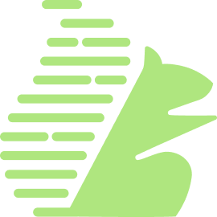

Neartail - ChatGPT Apps
2025Create forms inside ChatGPT and instantly publish them across platforms.
Your customers are already saying incredible things about your product. BuddyHQ turns that voice video, audio, text into branded, publish-ready UGC content. No editing suite. No copywriter. Just feedback in, marketing assets out.

.png)
SaaS application
5 months
2 Full-stack engineer, founder & co-founders
Imagine you're a marketing lead at a B2B SaaS company. You just wrapped a customer interview series. 14 video calls, 200+ survey responses, three months of support transcripts in a Google Drive folder.
Every conversation has a quote, a moment, a story worth publishing. By Friday, you'll ship two LinkedIn posts and one case study draft. The rest sits untouched until someone deletes the folder next quarter.
The signal is there. The system to turn it into content isn't. Every asset travels through 5+ handoffs across 4+ tools manually, every time:
Survey tools drop responses into spreadsheets.
A marketer watches hours of footage. Most signal gets lost here.
Summaries get handed to copywriters and designers. Context dilutes.
Videos in Premiere, posts in Canva, emails elsewhere. Nothing shares context.
Final assets live across Drive, Notion, Dropbox. No source of truth.
It looks like a content problem. It's a system problem. Teams aren't short on tools, they're operating across disconnected systems with no continuity.
What if customer voice didn't sit in folders, but flowed directly into the content marketing teams ship?
BuddyHQ ingests feedback in any modality video, audio, text, surveys, transcripts. An AI engine handles transcription, theme extraction, and brand voice calibration. It returns 7+ branded formats ready to publish. One pipeline. One interface. Zero tool switching.
The team had a working AI pipeline that could ingest video, audio, and text and generate multiple output formats. What they didn't have was a product around it. No interface. No information architecture. No defined user journey.
The questions I had to answer:
Before touching Figma, I ran a focused 5-day sprint to understand who BuddyHQ was actually for and how they'd use it. The goal was to validate the product hypothesis with real marketing teams before committing to a direction.
Stakeholder alignment, current workflow audit
SME sessions with 4 marketing professionals
Concept exploration and information architecture
Synthesize findings, lock direction with team
Test prototype concepts with 5 PoC users
I ran a lot of sessions with content marketers, growth leads, and content managers across SaaS companies. The conversations were more specific than I expected. Three breakdowns came up in every session:
I have hours of interviews. I just want a finished LinkedIn post that sounds like the customer.
I'm a team of one shipping across five channels. I need leverage, not another tool to learn.
The PoC validated the conversational-first model with real users and gave the team a concrete artifact to align on. I designed and prototyped the core interaction loop: upload feedback → describe intent → review generated content.
I tested the prototype with 5 marketing teams from the SME pool. The findings unblocked the next phase:
⚠ Disclaimer: Early validation signals from a controlled PoC (n=5). Metrics indicate directional usability and adoption potential, not production-scale outcomes.
The PoC validated the concept. The real challenge was figuring out: which modules should we build first, and how could they flex across content formats without fragmenting into five separate products?
From the SME interviews and PoC sessions, the priority was clear:
That shaped the MVP into 6 core modules, each reusing the same generation engine, the same component patterns, and the same content storage system.
The modules aren't five products. They're five views into the same engine. One source of truth, multiple surfaces. This was the architectural choice that made BuddyHQ scalable.

SMEs described their work as delegation, not configuration: "I need someone to take these responses and make a post." A chat-first model honored that mental model.
A single chat surface with five quick-action cards (Video Snippets, Survey Snap, Post Creator, Audio Bites, Blog). The AI handles orchestration — no menus, no settings before generating.
New output formats can be added as quick-action cards without redesigning the interface. The interaction model holds regardless of how the AI engine evolves underneath.


Video was the most labor-intensive content type Premiere, CapCut, hours of clipping. Inline editing was the most-requested capability in interviews. Without it, marketers would still leave the app to finish the work.
A thumbnail strip showing all 10 generated snippets, inline captions for accessibility, and a built-in timeline editor for trim and approve. Platform resize (YouTube, Instagram, LinkedIn) lives in the same panel users never leave the canvas.
The timeline editor became the pattern for inline editing across every other module trim audio, edit blog, refine post all use the same component vocabulary.


Marketers ship the same post across LinkedIn, Instagram, and X three aspect ratios, three rounds of design work. The PoC confirmed format-switching was the second-biggest time sink after video.
Brand-consistent generation with one-click aspect-ratio switching. Source attribution baked in marketers can see exactly which customer quote drove the asset. A slide strip shows all variants; new pages can be added without re-prompting.
The aspect-ratio system became the foundation for any future format expansion ads, reels, carousels all use the same canvas with different output specs. Brand kit lives at the project level, so consistency holds without per-asset configuration.


Audio was the most overlooked format in early concept testing, but marketers requested it for two reasons: shareability (podcast clips, social audio) and accessibility (a second surface for the same content).
A dual-input system: audio extracted from video, or generated from text with brand voice calibration. One waveform editor, one transcript, one export regardless of source. Speaker-labeled transcripts, trim points, and brand audio styling (intro/outro) all in one panel.
Audio Bites became cross-module infrastructure. The same generated bites feed back into Video Snippets as background scores closing a loop other tools never close. One generation pass produces a podcast clip, a social audio post, a video soundtrack, and an accessible audio version of a blog.


Generation alone wasn't enough every long-form piece needs editing. If users had to copy text into Google Docs to refine, the value of in-app generation collapsed.
An inline rich-text editor with a contextual toolbar. Toolbar placement was the hardest design call in the build I tested fixed-top, sidebar, and contextual-on-selection. Final placement docks away from the canvas and surfaces only on selection. The principle: the tool should never compete with the work.
Establishes BuddyHQ as a production tool, not a draft tool. The editor pattern extends to email composition and any future text-based content type. Users finish the work in BuddyHQ they don't pass it through three other tools to publish.


SME research surfaced one recurring complaint: “I made a great asset last quarter. I have no idea where it is now.” Without a reuse layer, every piece of content becomes a one-time output. Compounding value never accrues.
I proposed a three-tier hierarchy mid-project, in a team design review: Chat → Project → Library. The Library is a single searchable surface across the entire workspace, with filters by type, approval status, and project.
The most underestimated feature in the product. The Library is what makes BuddyHQ a platform, not a tool. It scales from one user to an enterprise team without architectural redesign and it's the foundation for future search, recommendations, and AI-powered reuse suggestions.
BuddyHQ is built and pre-release. The honest story is about what was designed, validated, and shipped. Not paid-customer metrics that don't yet exist. Here's what's real:
Core modules shipped end-to-end. Chat Centre, Video Snippets, Post Creator, Audio Bites, Long-Form Editor, Global Library. All built and integrated with the AI engine, ready for pre-release.
Content output formats video snippets, social posts, emails, blogs, audio clips, UGC pages, and platform-specific resizes. All from a single unified interface.
Marketing professionals interviewed across SME sessions and PoC validation. Conversational-first interaction model validated with 5/5 teams completing core tasks unaided.
Average time to first output in PoC testing versus 3–7 days in the existing manual workflow. Stakeholder validation greenlit the next phase of partner-facing rollout.
The three-tier hierarchy and modular components weren't add-ons they were the foundation. Strategic systems thinking turned a tool into a platform.
Mid-project, I had real doubts about the AI premise. Working through that tension made me design for augmentation, not replacement. Every screen is built around a human making the final call.
The toolbar placement consumed more debate than any major flow. Friction lives in the details.
The three-tier hierarchy emerged from a mid-project design review the kind of decision that only happens if you're paying attention to what's breaking, not just what's been scoped.